Five looks, one click in the tray
Switch from the tray or the Style page, which previews each style with your settings. The accent comes from your wallpaper, or you pick it. Size goes from 50 to 300%.
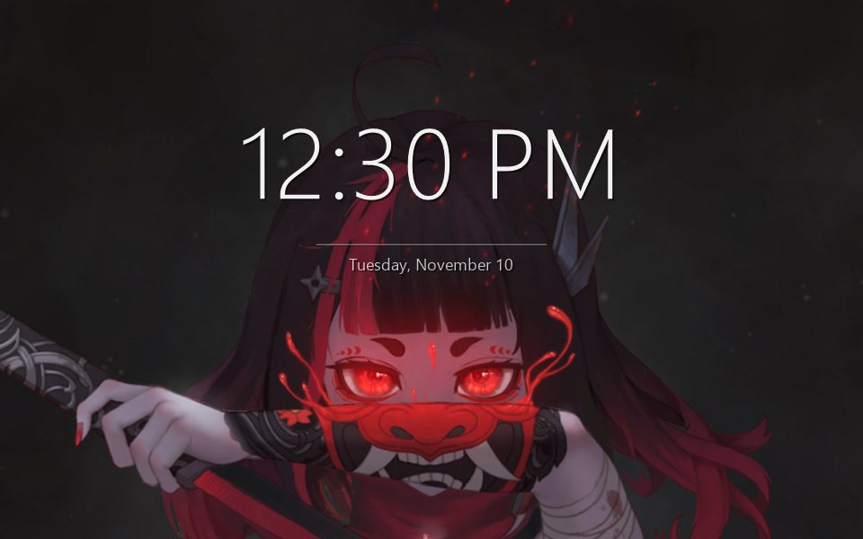
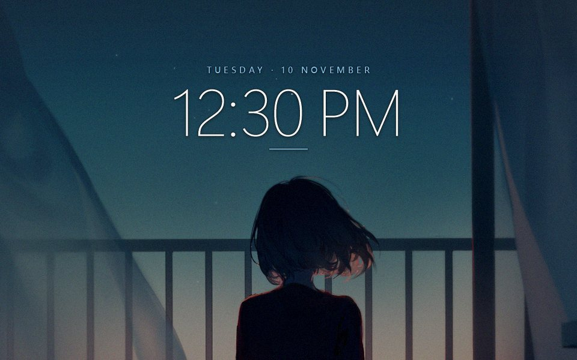
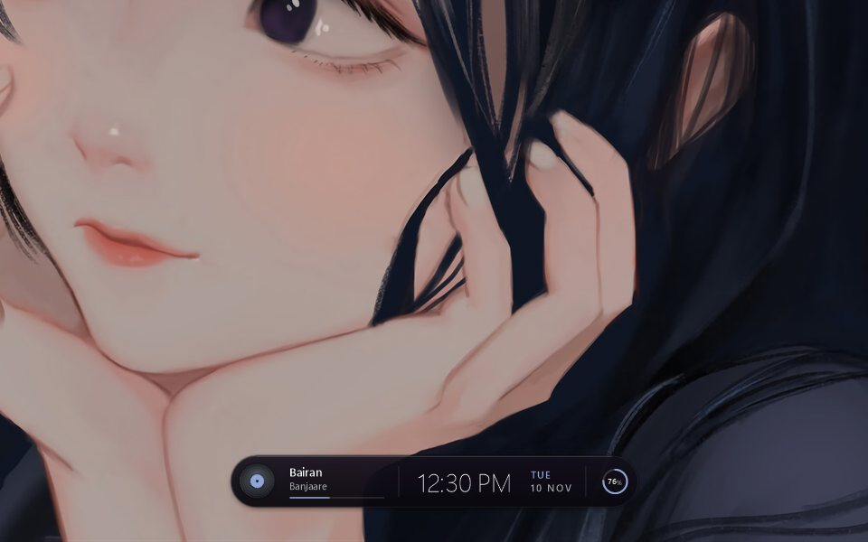
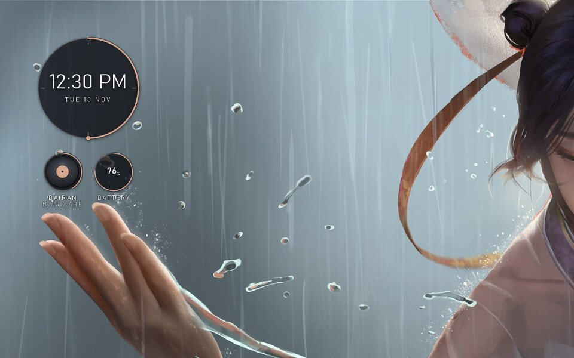
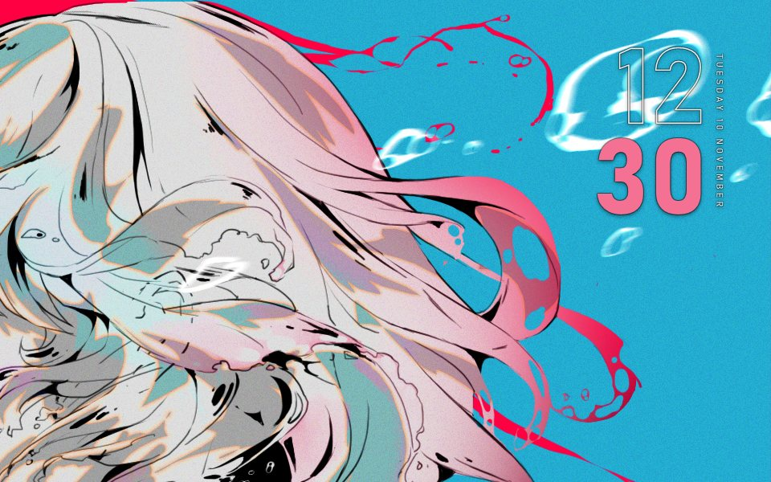
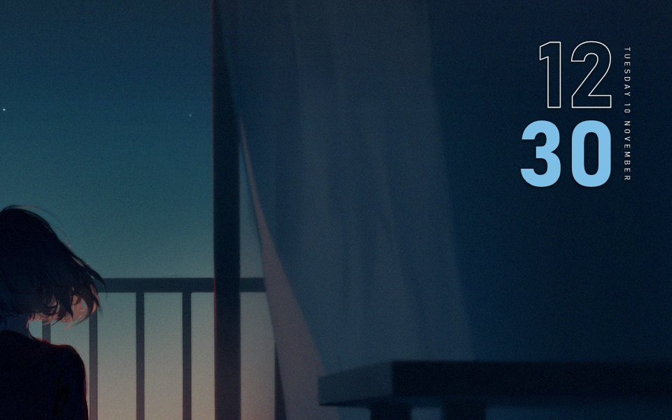
Drawn by FeatherWall's own renderers at 1920×1080; the stills are crops. The wallpapers are other artists' work, credited at the foot of the page.
Inside the stack, not on top of it
Most tools hide a window behind your icons. FeatherWall draws inside the desktop itself, so icons, right-click and window order keep working.
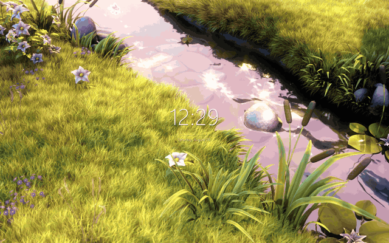
24H2 changed the rules
24H2 broke the old WorkerW trick, so many wallpaper tools now show black. FeatherWall detects which desktop it has and handles both.
One process, no shell
Direct3D 11 and DirectComposition, from C# through Vortice. It ships without Chromium, Electron or a launcher.
It gets out of the way
Playback stops, not slows, for fullscreen apps, the lock screen, remote sessions and battery saver. Your game gets the GPU to itself.
What it actually costs
Measured by scripts/bench/Run-Bench.ps1. It throws out any sample where the wallpaper paused partway, because a paused wallpaper looks cheap. Pick a state.
It runs on the integrated GPU. The compositor uses whichever adapter drives your display, and nvidia-smi shows nothing on the RTX 5090. Games keep the big GPU.
GPU is per engine. The percentages don't add up, so the table shows the busiest. Graphics memory is separate from the working set, and paused holds the most: buffers stay so resuming is instant.
Two corrections, both against us. Dedicated VRAM is 232 MB, not 0 MB. Paused CPU is 0.034%, not the 0.004% this page once said.
1080p60 is unmeasured. A dash means nobody ran it, not zero. CPU swings two- to threefold between runs, so read each figure as one sample.
The widgets' cost. Still image: 0.026% → 0.135% CPU, five times baseline, and that is the turning record. Turn off spin to get it back. 4K60: 0.721% → 0.988%, GPU unchanged.
A clock, a charge, a record
Any font you own, in nine positions, with a live preview. A battery halo, and a record with the real album art. Only the record animates, and it stops when the desktop is covered, the screen sleeps or the music does. Everything else redraws only when Windows reports a change.
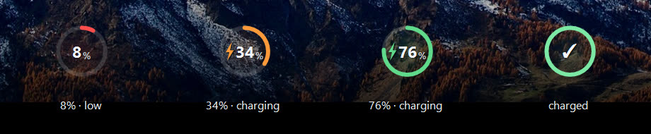
Red to 20%, orange to 50%, green above. A bolt while charging, a tick when full. You set the thresholds, colours, size and corner.
All four drawn by the real renderer and set side by side; a laptop shows one at a time. The rest here is live capture.
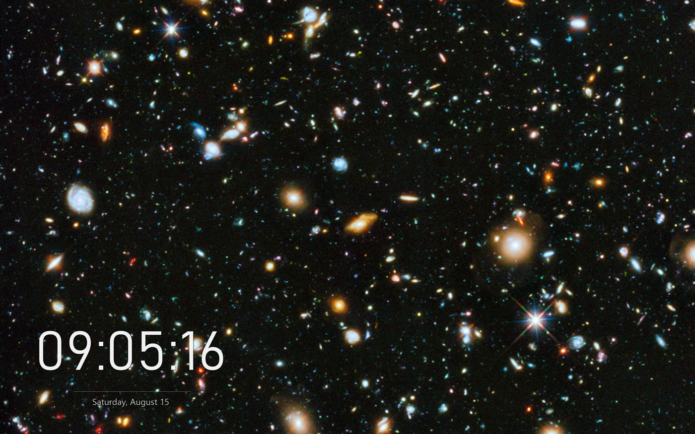
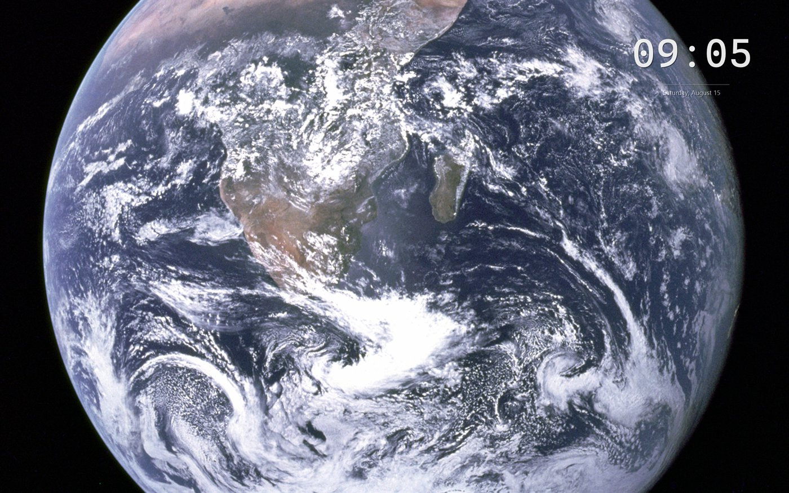
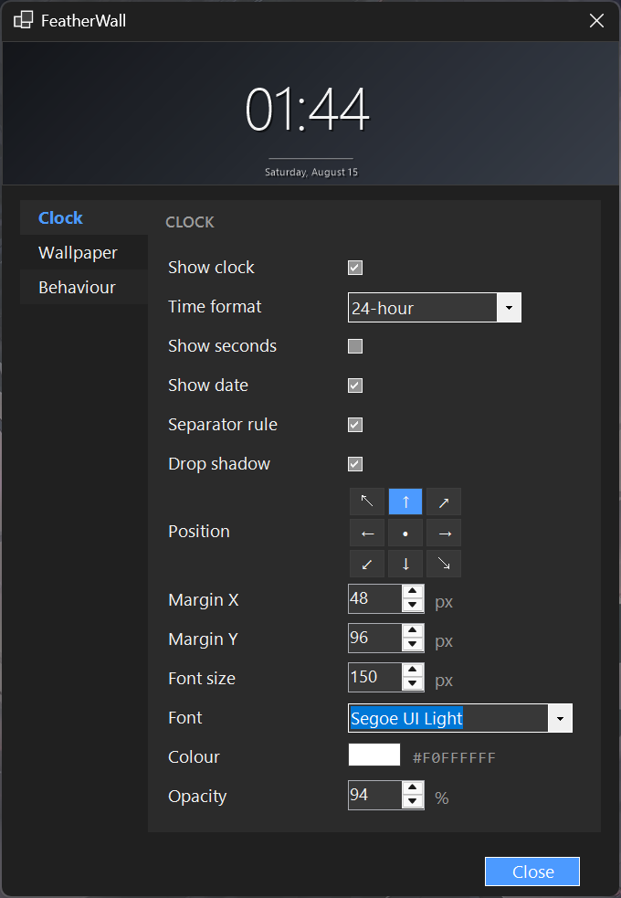
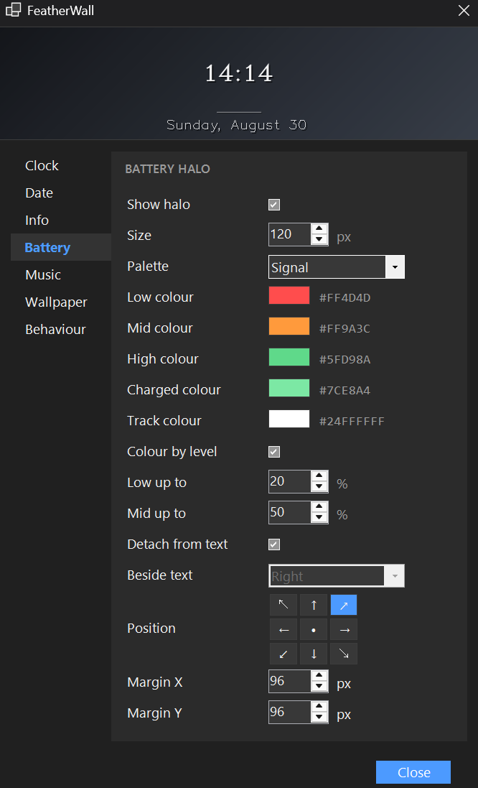
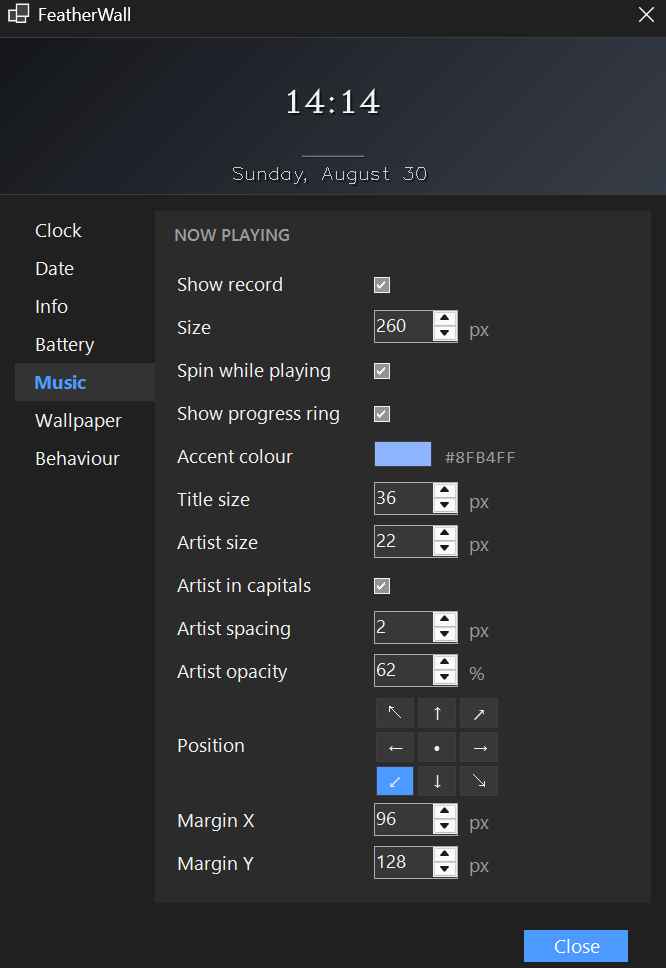
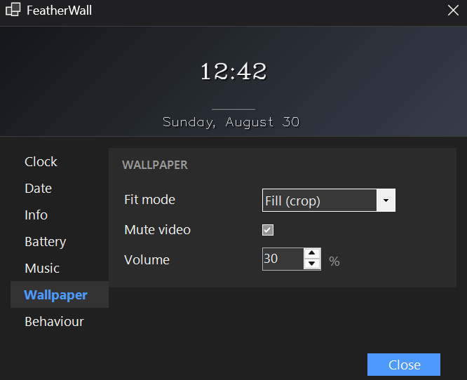
One line in a terminal
FeatherWall is on winget, which comes with Windows 10 and 11. It installs per user without admin rights, and winget upgrade keeps it current. Releases are unsigned, so SmartScreen may warn on the ZIP's first run.
winget Fastest
Paste into PowerShell or Terminal. It starts in the tray and adds itself to the Start menu.
Update with winget upgrade RitvikDayal.FeatherWall. Needs the .NET 10 desktop runtime.
ZIP No installer
Unzip anywhere and run FeatherWall.exe. To check the download first, run this in PowerShell:
Get the ZIP 7.2 MBShould read
088e26bbcc391b6e734a080e0dbc29a0da7a73192e5bb6be1873c095e2fbc172
Build it From source
Needs the .NET 10 SDK. About a minute from a fresh clone.
Run dotnet test first to check the suite.
Five things need doing
One person, one monitor. Some code paths pass their tests but have never run on real hardware. These issues are open.
- #3Verify multi-monitor behaviour on real hardwarehelp wantedhardware needed
- #4Verify the classic WorkerW desktop topology on Windows 10help wantedhardware needed
- #5Verify recovery after an explorer.exe restartgood first issue
- #6Gallery: several entries are below the resolution of the displays they targethelp wantedgood first issue
- #1Pin SHA-1 checksums for the three unpinned NASA gallery videosgood first issue
Who made this
I'm Ritvik Dayal, a software engineer. I wanted a live wallpaper without a launcher, an account or a browser engine, so I built one.
MIT licensed. No paid tier.
- Runtime
- .NET 10
- Graphics
- D3D11 / DComp
- Released
- 10 Nov 2026
- Author
- @RitvikDayal